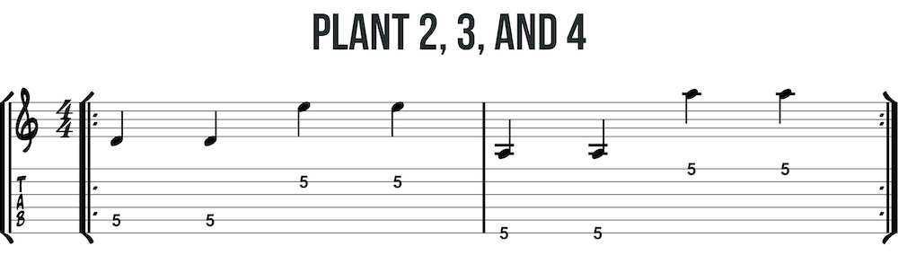
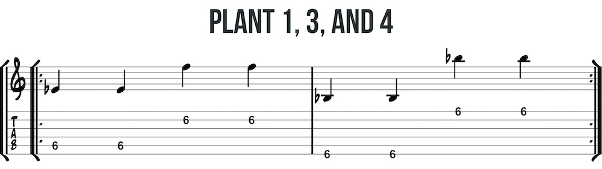
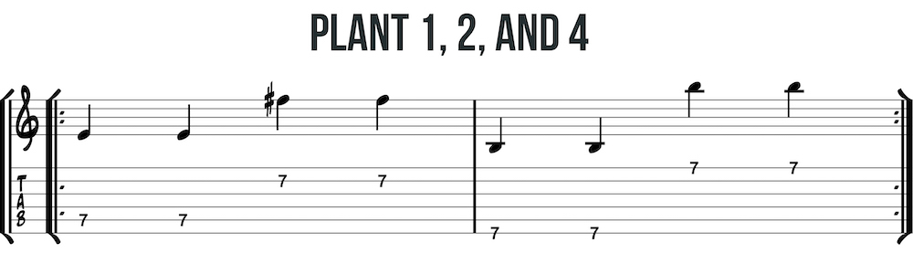
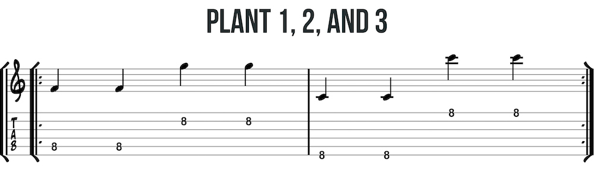

Finger planting is how farmers grow hands. Just kidding. Like the spider, these exercises train your fingers to be ready. For each exercise, plant three fingers on the third string using the one-finger-per-fret rule. Move the remaining finger between the fifth, second, sixth, and first strings.
   